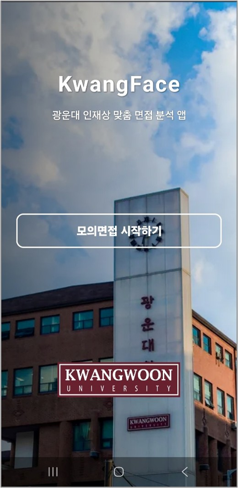
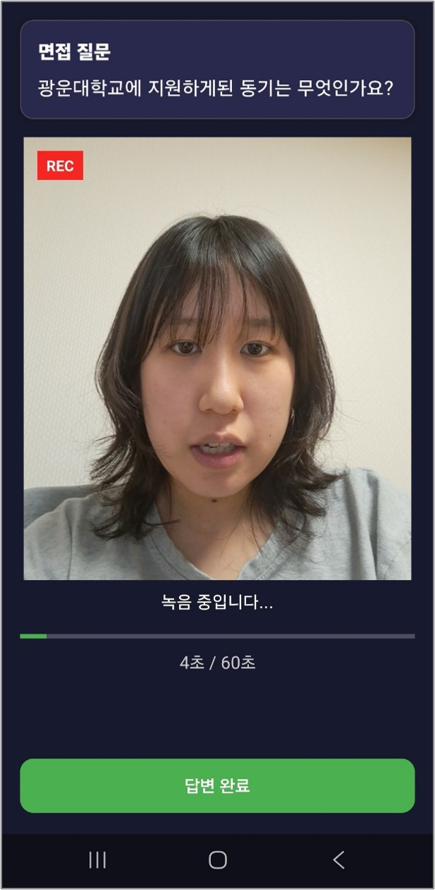
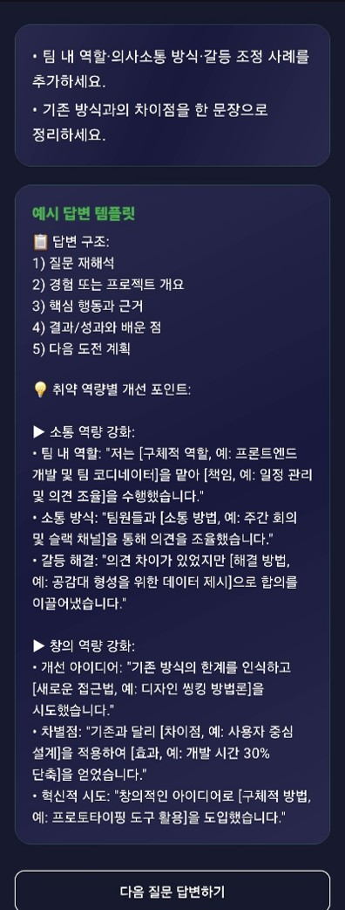
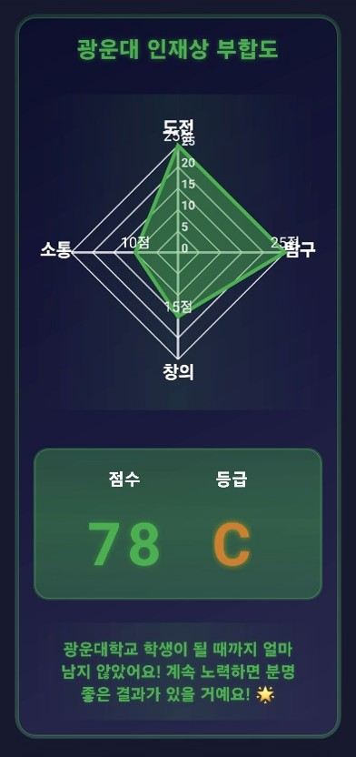
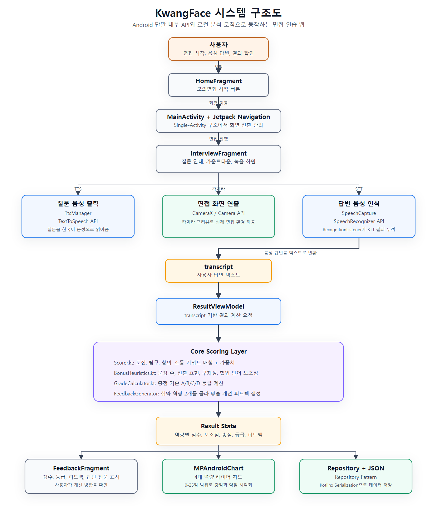
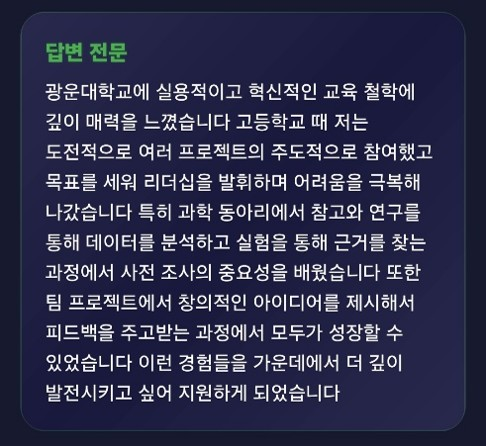
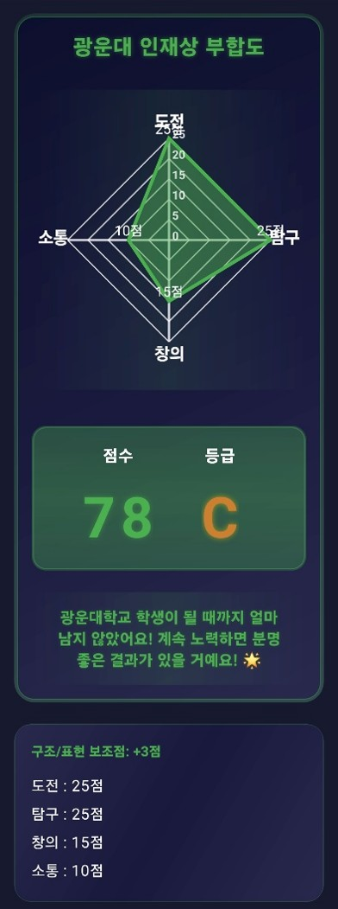
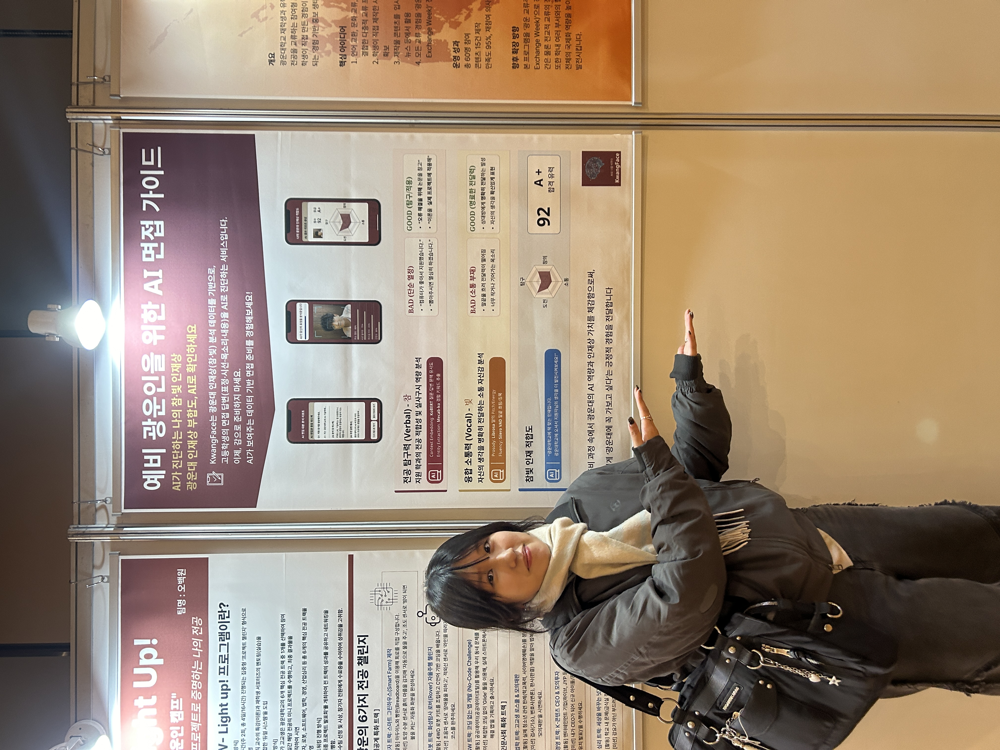
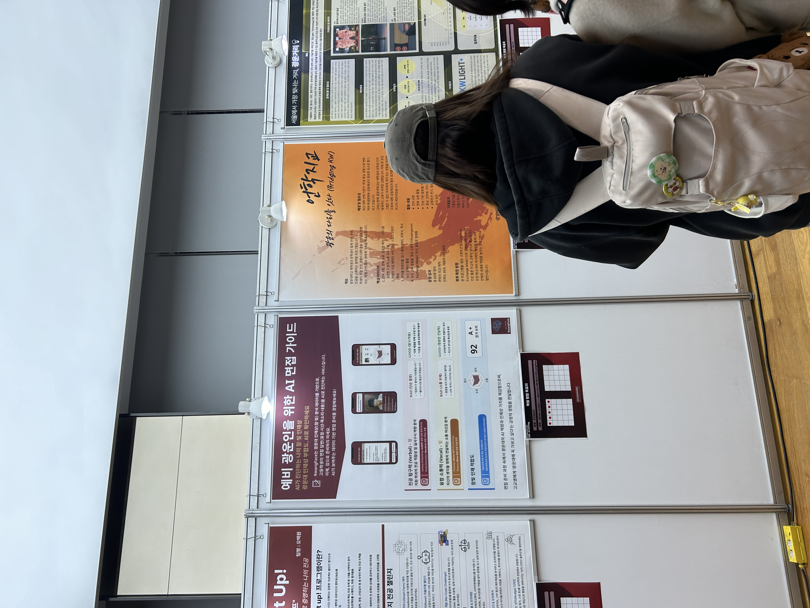

객관적 기준 부족
답변이 대학 인재상에 얼마나 맞는지 스스로 판단하기 어렵습니다.
Activity 02 · Android Interview Training App
광운대학교 수시전형 면접을 준비하는 고등학생이 자신의 답변을 도전, 탐구, 창의, 소통 기준으로 점검하고 다음 답변을 개선할 수 있도록 만든 학교 맞춤형 AI 면접 분석 앱입니다.
AI가 진단하는 나의 참·빛 인재상

Problem & Planning
기존 면접 준비는 답변 태도나 발음처럼 범용 기준에 집중하는 경우가 많았습니다. KwangFace는 “면접을 잘 봤는지”보다 “내 답변이 광운대 인재상에 어떻게 연결되는지”를 보여주는 서비스로 문제를 재정의했습니다.
고등학생은 앱을 통해 자신의 답변을 분석받고, 광운대는 “AI에 강한 대학”이라는 이미지를 실제 사용 경험으로 전달할 수 있습니다.
답변이 대학 인재상에 얼마나 맞는지 스스로 판단하기 어렵습니다.
일반 면접 앱은 표정, 발음, 시선 등 범용 태도 분석에 머무르기 쉽습니다.
광운대의 AI 기술력과 인재상 가치를 고교생이 직접 체감하는 콘텐츠가 필요했습니다.
Core Feature Overview
질문 진행, 답변 인식, 점수화, 리포트 시각화를 하나의 앱 흐름으로 연결했습니다.
TTS로 면접 질문을 읽어줍니다.
카메라 화면을 보며 60초 동안 음성으로 답변합니다.
STT transcript를 도전, 탐구, 창의, 소통 기준으로 점수화합니다.
피드백과 레이더 차트로 강점과 보완점을 보여줍니다.
3초 준비 시간 후 실제 면접처럼 질문을 듣고 말로 답변합니다.
Android SpeechRecognizer가 음성 답변을 분석 가능한 텍스트로 변환합니다.
역량별 키워드와 문장 구조 보조점을 결합해 점수를 계산합니다.
MPAndroidChart로 4개 역량의 강약점을 직관적으로 시각화합니다.
취약 역량을 중심으로 다음 답변에서 보완할 문구와 예시 답변을 제공합니다.
Actual App Flow
Home → Interview → Feedback → Radar Report 순서로 사용자가 자연스럽게 반복 연습할 수 있도록 구성했습니다.



System Architecture
Single-Activity 구조에서 Fragment 전환을 Jetpack Navigation으로 관리하고, ViewModel과 StateFlow로 질문 진행 상태, 녹음 상태, STT 결과, 점수 계산 결과를 화면에 반영했습니다.

| Language | Kotlin |
|---|---|
| Architecture | MVVM, Single-Activity |
| Navigation | Jetpack Navigation |
| State | ViewModel, StateFlow |
| Voice | SpeechRecognizer, TextToSpeech |
| Camera | CameraX |
| Chart | MPAndroidChart |
질문 표시, TTS 재생, 카운트다운, STT 녹음, 카메라 프리뷰를 담당합니다.
답변 텍스트를 받아 점수 계산, 등급 산출, 피드백 생성을 연결합니다.
Scorer, BonusHeuristics, GradeCalculator, FeedbackGenerator로 분석 과정을 분리했습니다.
MPAndroidChart를 활용해 도전, 탐구, 창의, 소통 점수를 시각화합니다.
Voice Interview Pipeline
텍스트 입력 대신 TTS와 STT를 결합해 면접 환경에 가까운 연습 흐름을 만들었습니다.
현재 순서의 면접 질문을 화면에 표시합니다.
질문을 한국어 음성으로 읽고, 다시 듣기 흐름을 제공합니다.
답변 시작 시점을 명확히 알 수 있도록 카운트다운을 보여줍니다.
부분 결과와 최종 결과를 누적해 긴 답변을 transcript로 변환합니다.
TTS 출력과 STT 입력이 충돌하지 않도록 음성 출력 후 녹음이 시작되게 분리했습니다.
긴 답변도 안정적으로 처리할 수 있도록 부분 결과와 최종 결과를 누적합니다.
카운트다운, REC 표시, 녹음 시간, 답변 완료 버튼으로 현재 상태를 명확히 보여줍니다.
Scoring Engine
키워드 매칭만으로 끝내지 않고 문장 수, 구체성 표현, 전환 표현, 협업 단어 등 구조 보조점을 함께 반영했습니다.
도전, 극복, 목표, 리더십, 시도, 감내, 주도
탐구, 분석, 실험, 근거, 연구, 데이터, 사전조사
창의, 혁신, 개선, 아이디어, 새롭, 발명, 독창
소통, 협력, 공감, 팀, 의견, 조율, 피드백
각 역량은 0~25점 범위로 제한하고, 총점은 4개 역량 점수와 보조점을 합산해 100점 범위로 계산했습니다.
| 평가 항목 | 조건 | 점수 |
|---|---|---|
| 문장 수 | 문장 수 3개 이상 | +5점 |
| 전환 표현 | “결과적으로”, “경험을 통해” 포함 | +3점 |
| 구체성 표현 | “예를 들어”, “당시” 포함 | +3점 |
| 협업 단어 | “팀”, “협업” 포함 | +3점 |
Feedback & Visualization
사용자가 어떤 역량을 보완해야 하는지 바로 이해할 수 있도록 답변 전문, 취약 역량 피드백, 예시 답변, 레이더 차트를 함께 제공합니다.


| 등급 | 점수 기준 | 의미 |
|---|---|---|
| A | 90점 이상 | 참빛인재 매우 부합 |
| B | 80점 이상 | 인재상 부합 |
| C | 60점 이상 | 성장 가능, 추가 준비 필요 |
| D | 60점 미만 | 준비 미흡, 단계적 개선 필요 |
AI Extension Plan
현재 MVP는 STT 기반 텍스트 분석과 규칙 기반 점수화에 집중했습니다. 향후에는 Verbal, Visual, Vocal 데이터를 결합한 면접 분석 구조로 고도화할 수 있습니다.
답변 텍스트를 인재상 키워드와 문장 구조 기준으로 분석합니다.
KoBERT, KoELECTRA, Mecab-ko 기반 문맥 유사도와 키워드 추출로 확장할 수 있습니다.
MediaPipe Face Mesh, Eye Contact Ratio, BlazePose로 면접 태도를 수치화할 수 있습니다.
Librosa, OpenSMILE, Silero VAD로 발화 속도, 에너지, 침묵 구간을 분석할 수 있습니다.
Result
KwangFace는 TTS 질문 출력, STT 답변 인식, 규칙 기반 점수화, 피드백 생성, 레이더 차트 리포트 기능을 실제 앱 화면으로 완성한 프로젝트입니다.


일반적인 면접 연습 앱이 아니라 대학의 인재상과 AI 분석 경험을 연결한 학교 맞춤형 서비스입니다. 고등학생에게는 면접 준비 기준을 제공하고, 대학에는 AI 기술력을 체험하게 하는 홍보 콘텐츠로 활용될 수 있습니다.
음성 입력, 상태 관리, 점수화 로직, 결과 시각화를 하나의 앱 흐름으로 통합했습니다. 또한 AI 서비스는 분석 기능 자체만큼이나 사용자가 결과를 이해하고 다음 행동으로 이어갈 수 있게 만드는 피드백 구조가 중요하다는 점을 배웠습니다.